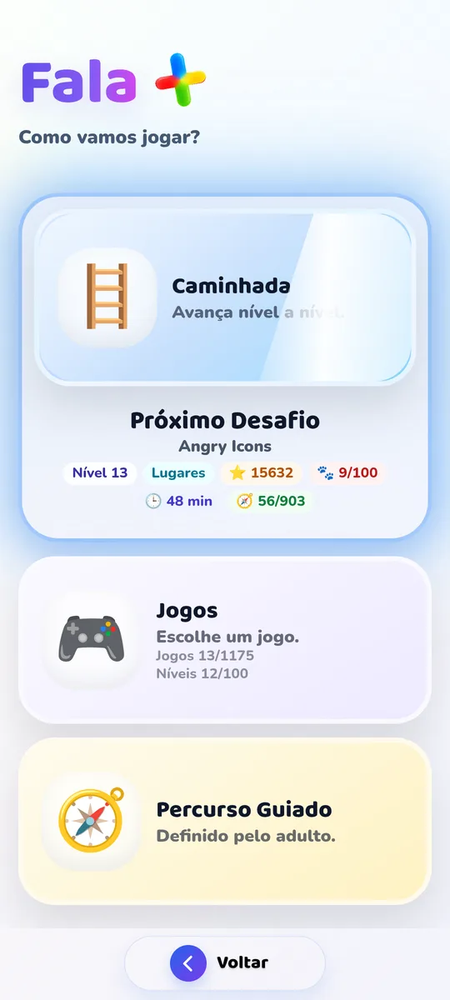
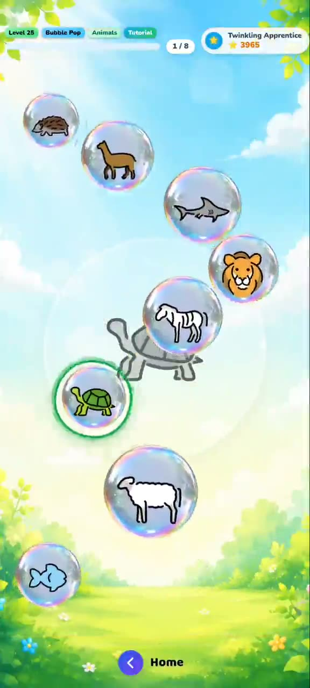
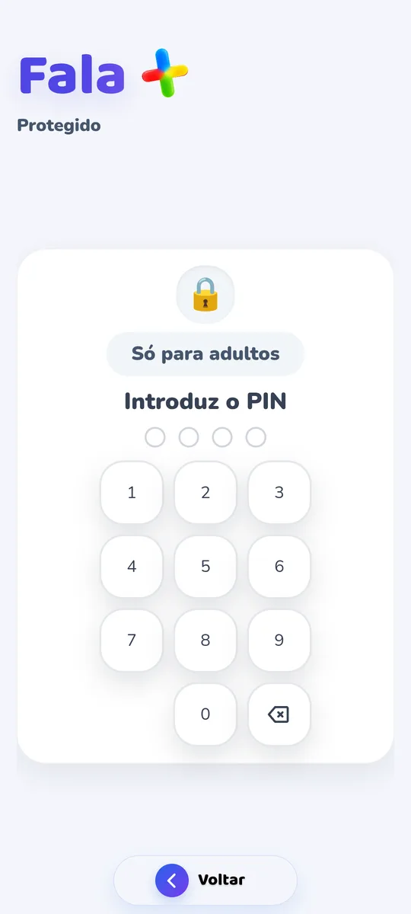

Communicate
One picture.
One word. One intention.
Choose what you want to say, build a sentence and hear it out loud. A picture-based communication board to ask and share.
Iwantwater
A way to turn choices into communication.In testing · For Android
There are many ways to say how you feel. Talk+ brings together pictures, words, voice and games to go along with each child's discoveries.
At home, at school and in speech therapy sessions.


Learning is discoveringAvailable in English and Portuguese
No ads
For Android phones and tablets
Meet Talk+
To ask, share, explore and learn. Different ways to use the app, with room to choose what makes sense at each moment.
Communicate
Choose what you want to say, build a sentence and hear it out loud. A picture-based communication board to ask and share.
Walk
A level-by-level path that goes along with the child, with routes for children who can already read and for those still discovering words.
Games
Memory, colours, words and lots of challenges. Games that invite you back to try again.
Discover the gamesGuided Path
The adult sets the path of activities. The child discovers the challenges chosen for them.
Play
Play instruments, have fun with Magic Voice, launch confetti or meet the Talking Cactus. Room for curiosity and imagination.
Bubble Pop · Pop the bubble that is asked for.
A look inside
See the games in action. Choose a demo and discover how words become part of play.
Real Talk+ videos. Press play to start.
One child. One team.
The same app at different moments of the day. With tools for those who play, teach and support.
Share a game, give voice to a request and follow the small achievements of everyday life.
Choose activities, follow different profiles and check the weekly PDF report to support analysis and sharing.
Explore words and pictures about emotions, routines, school and other themes familiar to the child.

The adult stays involved.Familiar to the child. Useful to the adult.
Talk+ plans
The app has a free plan and a Premium option.
During testing, check the access conditions with us.
To get started
The first discoveries, with no ads.
To keep going
A complete experience to discover more.
Price and subscription shown on Google Play when available.
Learn more about accessThe app is only available in testing. Ask for access by email to receive information about taking part and installing it on Android.
Yes, on Android devices. Talk+ is not yet available for iPhone or iPad.
Yes. The whole app can be used in English or in European Portuguese. In English, words are read aloud by your device's own voice; the recorded app voices are in Portuguese. You can also record your own voice for each word.
Walk has paths for children who can already read and for those who can't yet. Pictures and spoken instructions go along with the experience.
No. It is a complementary tool for playing and exploring communication, at home, at school or between sessions. It does not replace professional assessment or support.
No. Talk+ shows no ads on any plan.
Yes. In the Adult Area you can personalise words with recordings and photos, bringing the experience closer to the child's everyday life.
See the privacy policy, which also explains how to delete the account and the data.
Test phase · Android
Would you like to try Talk+ with a child, at school or in sessions? Ask for information about joining the tests.
Ask to join the tests Opens your email app. You can also write to apoio@falamais.pt.